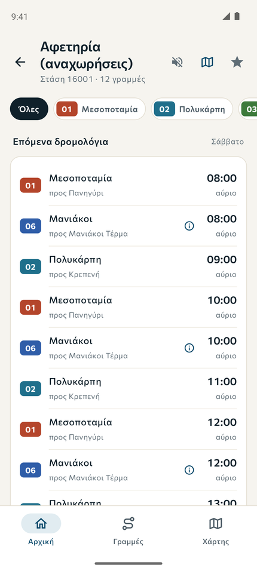
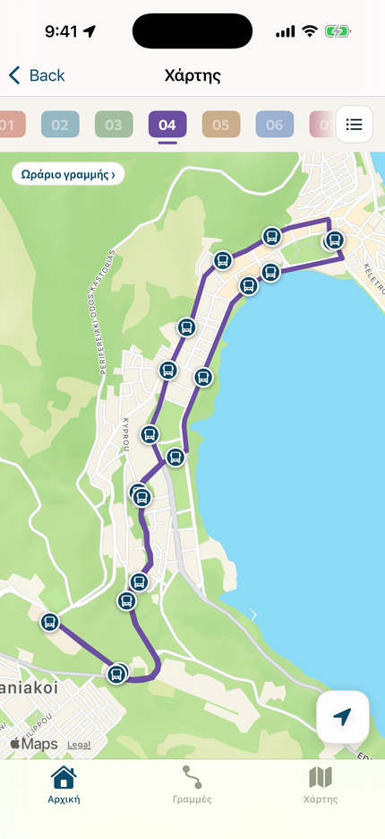
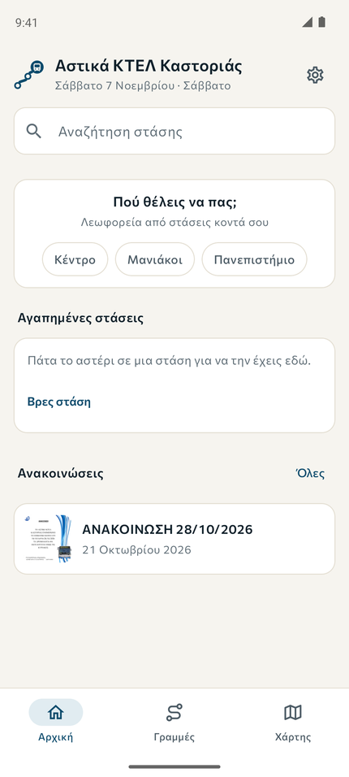

Kotlin · Compose
Αστικά Καστοριάς για AndroidKastoria City Buses for Android
Η εφαρμογή για τους επιβάτες. Κυκλοφορεί με αυτόματα releases από το CI.The passengers' app. Released automatically by CI.
Καστοριά · Ανοιχτό λογισμικόKastoria, Greece · Open source
Είμαστε ομάδα φοιτητών του Τμήματος Πληροφορικής στην Καστοριά. Φτιάχνουμε μαζί χρήσιμα έργα ανοιχτού κώδικα και μαθαίνουμε δουλεύοντας σε πραγματικά προβλήματα. We're a team of Informatics students in Kastoria. We build useful open source software together, and learn by working on real problems.
ΈργαProjects
Η επίσημη εφαρμογή του Αστικού ΚΤΕΛ Καστοριάς: κάθε γραμμή, στάση και δρομολόγιο της πόλης στο κινητό, με το πότε φτάνει το επόμενο λεωφορείο εκεί που είσαι. The official app of Astiko KTEL Kastorias: every line, stop and timetable of the city on your phone, with when the next bus gets to where you are.



Η εφαρμογή για τους επιβάτες. Κυκλοφορεί με αυτόματα releases από το CI.The passengers' app. Released automatically by CI.
Η ίδια εφαρμογή για iPhone, με τα ίδια δεδομένα και την ίδια λογική. Χτίζεται εξ ολοκλήρου στο CI.The same app for iPhone, with the same data and logic. Built entirely on CI.
Ο server που μαζεύει πού βρίσκεται κάθε λεωφορείο και το δίνει στις εφαρμογές των επιβατών.The server that collects where each bus is and serves it to the passengers' apps.
Τρέχει σε ένα κινητό σε κάθε λεωφορείο και στέλνει τη θέση του, ακόμα και χωρίς σήμα για λίγο.Runs on a phone in each bus and sends where it is, even through a gap in the signal.
Παίρνει τις ανακοινώσεις του ΚΤΕΛ από το site του και τις δίνει στις εφαρμογές ως feed.Mirrors the operator's announcements from its website into a feed for the apps.
Ημερολόγιο για Android που φέρνει μόνο του τα μαθήματα και τις εξεταστικές του πανεπιστημίου.An Android calendar that brings in university lectures and exam timetables on its own.
ΟμάδαTeam
Φοιτητές του Τμήματος Πληροφορικής του Πανεπιστημίου Δυτικής Μακεδονίας, στην Καστοριά. Students of the Department of Informatics of the University of Western Macedonia, in Kastoria.
ΣυμμετοχήGet involved
Η συμμετοχή είναι εθελοντική και ανοιχτή σε φοιτητές κάθε τμήματος και έτους, με ή χωρίς εμπειρία. Διάλεξε ένα ανοιχτό issue σε κάποιο από τα repos μας, ή άνοιξε ένα με τη δική σου ιδέα. Taking part is voluntary and open to students of any department or year, with or without experience. Pick an open issue in any of our repositories, or open one with your own idea.